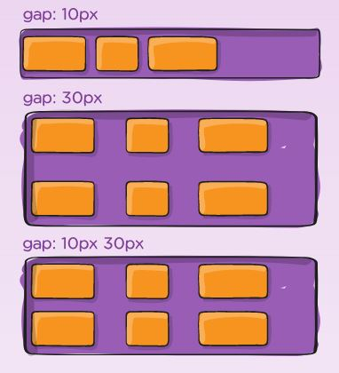

Flexbox explained
Properties for Parent (flex container)
Display
- display: flex; This defines a flex container; inline or block depending on the given value. It enables a flex context for all its direct children.
(css columns have no effect on a flex container)
Flex-direction
- flex-direction: row | row-reverse | column | column-reverse;
This establishes the main-axis, thus defining the direction flex items are placed in the flex container.
- row (default): left to right in ltr; right to left in rtl
- row-reverse: right to left in ltr; left to right in rtl
- column: same as row but top to bottom
- column-reverse: same as row-reverse but bottom to top
Flex-wrap
- flex-wrap: nowrap | wrap | wrap-reverse; By default, flex items will all try to fit onto one line. You can change that and allow the items to wrap as needed with this property.
- nowrap (default): all flex items will be on one line
- wrap: flex items will wrap onto multiple lines, from top to bottom.
- wrap-reverse: flex items will wrap onto multiple lines from bottom to top.
Flex-flow
- flex-flow: column wrap; This is a shorthand for the flex-direction and flex-wrap properties, which together define the flex container’s main and cross axes. The default value is row nowrap.
Justify content
- justify-content: flex-start | flex-end | center | space-between | space-around | space-evenly | start | end | left | right ... + safe | unsafe;
- flex-start (default): items are packed toward the start of the flex-direction
- flex-end: items are packed toward the end of the flex-direction
- start: items are packed toward the start of the writing-mode direction
- end: items are packed toward the end of the writing-mode direction
- left: items are packed toward left edge of the container, unless that doesn’t make sense with the flex-direction, then it behaves like start
- right: items are packed toward right edge of the container, unless that doesn’t make sense with the flex-direction, then it behaves like end
- center: items are centered along the line
- space-between: items are evenly distributed in the line; first item is on the start line, last item on the end line
- space-around: items are evenly distributed in the line with equal space around them
- space-evenly: items are distributed so that the spacing between any two items (and the space to the edges) is equal
Align-items
- align-items: stretch | flex-start | flex-end | center | baseline | first baseline | last baseline | start | end | self-start | self-end + ... safe | unsafe;
- This defines the default behavior for how flex items are laid out along the cross axis on the current line. Think of it as the justify-content version for the cross-axis (perpendicular to the main-axis)
- stretch (default): stretch to fill the container (still respect min-width/max-width)
- flex-start / start / self-start: items are placed at the start of the cross axis The difference between these is subtle, and is about respecting the flex-direction rules or the writing-mode rules
- flex-end / end / self-end: items are placed at the end of the cross axis. The difference again is subtle and is about respecting flex-direction rules vs. writing-mode rules
- center: items are centered in the cross-axis
- baseline: items are aligned such as their baselines align
Align-content
- align-content: flex-start | flex-end | center | space-between | space-around | space-evenly | stretch | start | end | baseline | first baseline | last baseline + ... safe | unsafe;
- This aligns a flex container’s lines within when there is extra space in the cross-axis, similar to how justify-content aligns individual items within the main-axis
- normal (default): items are packed in their default position as if no value was set
- flex-start / start: items packed to the start of the container. The (more supported) flex-start honors the flex-direction while start honors the writing-mode direction
- flex-end / end: items packed to the end of the container. The (more support) flex-end honors the flex-direction while end honors the writing-mode direction
- center: items centered in the container
- space-between: items evenly distributed; the first line is at the start of the container while the last one is at the end
- space-around: items evenly distributed with equal space around each line
- space-evenly: items are evenly distributed with equal space around them
- stretch: lines stretch to take up the remaining space
Gap, row-gap, column-gap

- gap: 10px: The gap property explicitly controls the space between flex items. It applies that spacing only between items not on the outer edges